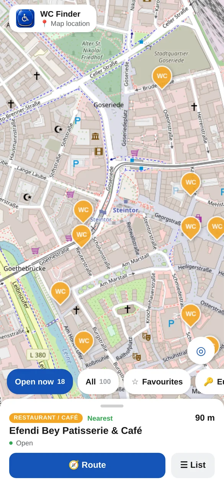
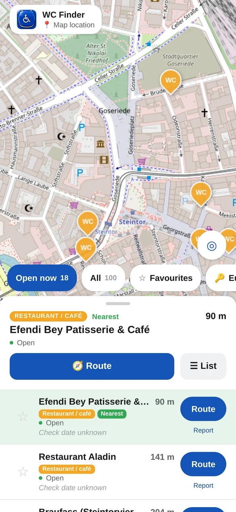
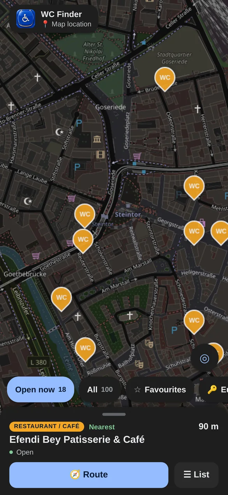
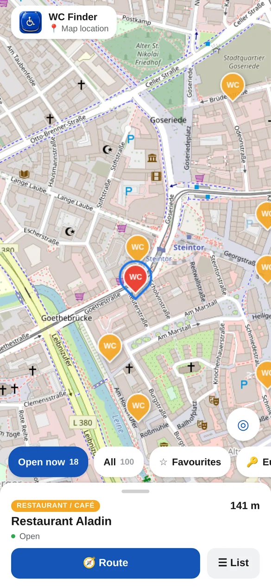

Alles auf einer Karte
Farbcodierte Pins, die nächste Toilette immer im Blick, Route mit einem Tipp.
87.539 Einträge in Deutschland, Österreich und der Schweiz – mit Eurokey, Öffnungszeiten und dem Datum der letzten Prüfung. Im Browser oder als Android-App.

WC Finder bündelt öffentliche Toiletten, Bahnhöfe, Tankstellen, Gastronomie und spezielle Pflege-Toiletten in einer Karte – auf Android komplett ohne Netz.
Farbcodierte Pins, die nächste Toilette immer im Blick, Route mit einem Tipp.
Jetzt geöffnet, Eurokey, Rollstuhl, Pflegeliege, Lifter – direkt über der Liste.

Dunkelmodus folgt dem System – inklusive abgedunkelter Karte.

Keine Anmeldung, keine Werbung. Standort freigeben, Filter setzen, antippen, losgehen – die Navigation übernimmt Google Maps oder Apple Karten.
Die Karte springt zu dir. Ohne Standort kannst du sie frei erkunden.
Details, Öffnungszeiten, Ausstattung und Prüfdatum in der Karte darunter.
„Jetzt geöffnet“ ist vorausgewählt. Eurokey oder Pflegeliege ein Tipp entfernt.
Fußgängerrouting in deiner Karten-App. Bei geschlossenen Toiletten warnt die App.

Jeder Eintrag zeigt, wann er zuletzt geprüft wurde – und ob das eine Person vor Ort war, ein Verzeichnis oder nur ein Datenabruf.
Steht so prominent wie die Adresse. Einträge ohne Datum oder älter als 18 Monate sind markiert.
OpenStreetMap, Toiletten für alle, Stadtdaten aus Berlin, Hamburg, Rostock, Münster und mehr – mit Link zur Quelle.
„Stimmt so“ nach dem Besuch schiebt das Prüfdatum nach vorn. Fehler meldest du in zwei Tipps.
Das komplette Verzeichnis als JSON, ohne Schlüssel. Dokumentation
Die Android-App enthält das Verzeichnis offline. Nur die Straßenkarte lädt online.